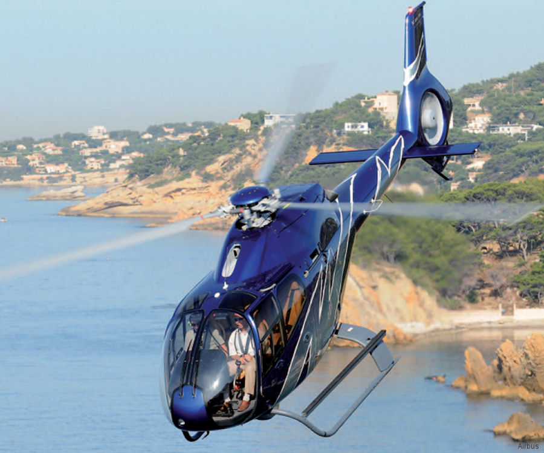
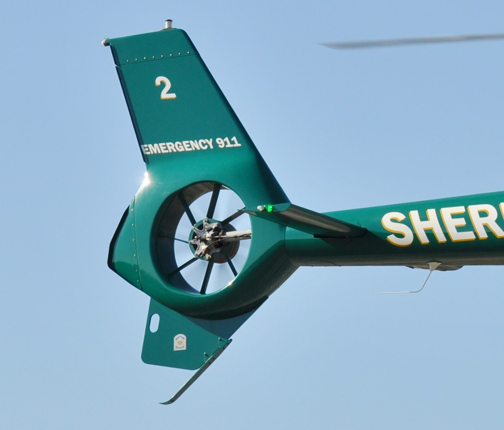
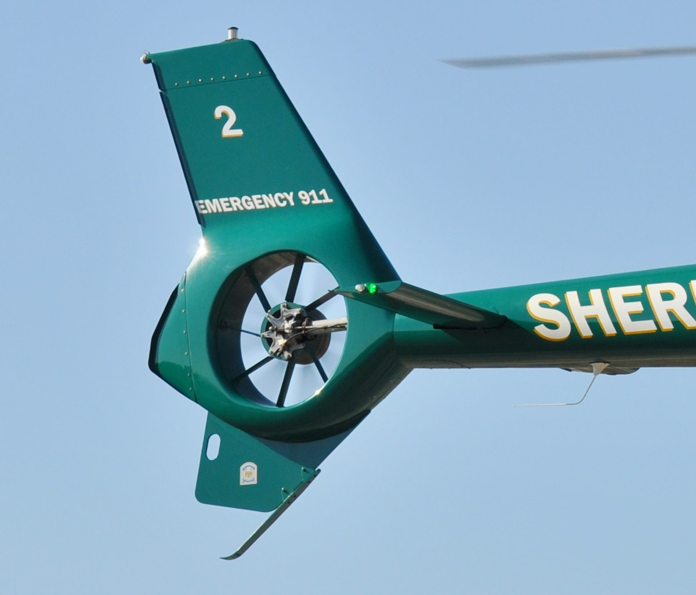
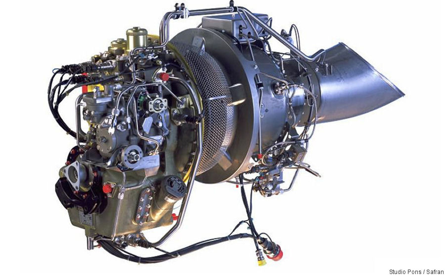
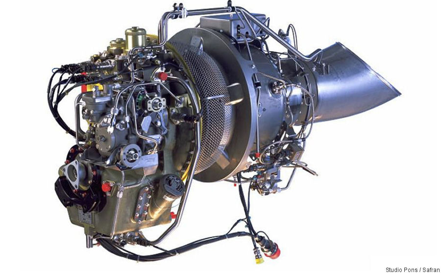
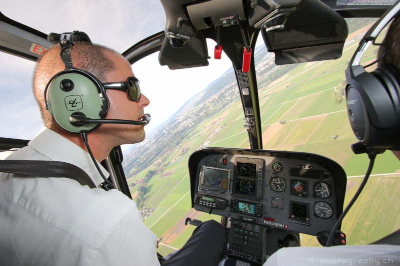
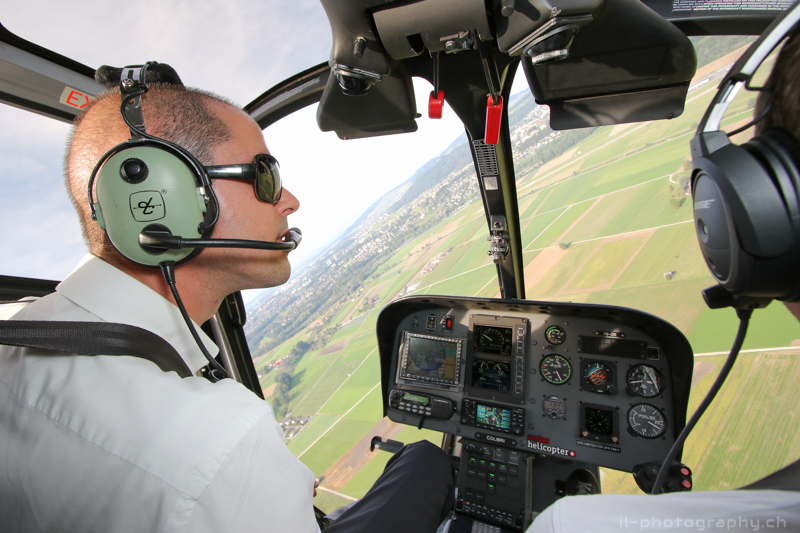

The most magical kind of aircrafts, in my opinion, are rotary wing aircrafts. Opposed to fixed wing aircrafts that are inherently aerodynamically stable, rotary wings employ complex mechanics to generate, and counter forces using almost unnatural principles to fly. And handling such a machine is both exciting and thrilling.
Among them, the Airbus Helicopter H120 the ultimate helicopter for pilots 
The EC120B Colibri is a single-engine multimission helicopter, designed for safe, simple, and cost-effective operations. It incorporates several of Eurocopter's trademarked technologies, those of prominence are the fully-articulated 3-bladed Speriflex main rotor head  and the 8-bladed fenestron anti-torque tail rotor these have been partially credited with contributing to the rotorcraft's noise signature, which is 6.7 decibels below International Civil Aviation Organization limits.
and the 8-bladed fenestron anti-torque tail rotor these have been partially credited with contributing to the rotorcraft's noise signature, which is 6.7 decibels below International Civil Aviation Organization limits.
 The rotor head combined with rotor blades made from composite material make the H120 extremely responsive to pilot inputs. And its single Rolls-Royce turbo-shaft engine provides it with ample power to work with 
The rotor head combined with rotor blades made from composite material make the H120 extremely responsive to pilot inputs. And its single Rolls-Royce turbo-shaft engine provides it with ample power to work with 
Aside from the technical aspect, the glass cockpit, superio r visbility and spacious cabin make flying it a pleasure.
 The aircraft features a wide, ergonomic cabin with high levels of external visibility, which can accommodate a single pilot along with four passengers in typical passenger configuration.
The aircraft features a wide, ergonomic cabin with high levels of external visibility, which can accommodate a single pilot along with four passengers in typical passenger configuration.
 The design of the cabin is suitable for a wide variety of civilian and parapublic missions, such as utility transport, offshore transport, training, law enforcement, casualty evacuation and corporate transport. In the casualty evacuation role, the rotorcraft can carry one pilot and one stretcher patient as well as one or two medical attendants.

The design of the cabin is suitable for a wide variety of civilian and parapublic missions, such as utility transport, offshore transport, training, law enforcement, casualty evacuation and corporate transport. In the casualty evacuation role, the rotorcraft can carry one pilot and one stretcher patient as well as one or two medical attendants.

As of 2014, the EC120 has the distinction of being the only single-engine rotorcraft to be certified to JAR/FAR 27 standards; measures incorporated to meet these standards include an energy-attenuating main structure, energy-absorbent seats for all on board, and a crash-resistant fuel system
Last but not least, my friend owns a H120!  And that makes H120 the helicopter I could most likely pilot in the foreseeable future.
And that makes H120 the helicopter I could most likely pilot in the foreseeable future.